정보통신기사(구) (2005-03-06 기출문제)
1과목: 디지털 전자회로
1. 그림과 같은 궤환 증폭기에 관한 설명 중 틀린 것은?
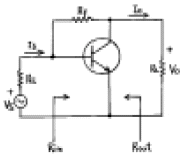
- 궤환으로 인하여 입력임피이던스 Rin은 감소한다.
- 궤환으로 인하여 출력임피이던스 Rout는 감소한다.
- 궤환으로 인하여 전류이득 Io/Is는 감소된다.
- Rf가 작을수록 Vo는 커진다.
(정답률: 알수없음)

2. RC결합 증폭기의 이득이 높은 주파수에서 감소되는 이유는 어떤 것인가?
- 출력회로내에 병렬용량이 있기 때문이다.
- 부하저항의 영향을 받기 때문이다.
- 증폭소자의 각 정수가 주파수에 따라 변하기 때문이다.
- 기생발진을 하기 때문이다.
(정답률: 알수없음)
3. 그림과 같은 회로에서 Zenner 다이오드의 파괴 전압은 50[V]이며, 그 전류 범위는 5~40[㎃]이다. 부하저항 RL에 흐르는 전류 IL의 최대값은 얼마인가?
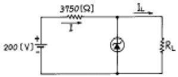
- 45[㎃]
- 35[㎃]
- 25[㎃]
- 15[㎃]
(정답률: 알수없음)
4. 디지털데이터를 전송하는데 PSK 변복조회로와 관계가 없는 것은?
- 디지털신호에 대응하여 위상이 변조된다.
- 3, 5, 7, 9 등의 다상방식이 있다.
- 평형변조회로가 이용된다.
- 복조시 동기검파를 한다.
(정답률: 55%)
5. 다이오드를 사용한 정류회로에서 여러 다이오드(n개)를 직렬로 연결하여 사용하면 어떤 장점이 있는가?
- n배의 출력전압을 얻을 수 있다.
- 과전압으로 부터 보호할 수 있다.
- 부하 출력의 맥동률을 감소시킬 수 있다.
- AC 전원으로 부터 많은 전력을 공급받을 수 있다.
(정답률: 알수없음)
6. 연산 증폭기(Op-Amp)의 응용 회로가 아닌 것은?
- 적분기
- 디지털 반가산 증폭기
- 미분기
- 아날로그 가산 증폭기
(정답률: 알수없음)
7. 다음 카운터의 명칭은?
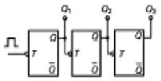
- 동기식 8진 업카운터
- 비동기식 8진 업카운터
- 동기식 8진 다운카운터
- 비동기식 3진 다운카운터
(정답률: 알수없음)
8. 부울대수(Boolean algebra) y의 보수를 취한 결과는?
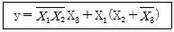
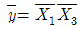
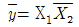
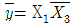
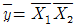
(정답률: 알수없음)
9. NOR 게이트로 구성된 SR 플립플롭에서 전의 상태를 유지하기 위해서는 SR이 어떤 경우일 때인가?
- SR = 01 일 때
- SR = 11 일 때
- SR = 10 일 때
- SR = 00 일 때
(정답률: 알수없음)
10. 다음 논리식을 간략화 하면?
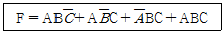
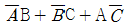
- AB + BC + CA
- AB + CA
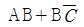
(정답률: 알수없음)
11. 다음 중 평형변조회로를 사용하는 가장 적합한 목적은?
- 변조도를 크게 하기 위해
- 직진성을 개선하고 변조 일그러짐을 없애기 위해
- SSB파를 얻기 위해
- 변조 전력을 줄이기 위해
(정답률: 알수없음)
12. 그림은 진폭 VP가 3[V], 펄스폭 λ가 0.25[㎳], 반복주 파수가 1[㎑]의 펄스파이다. 평균치를 지시하는 계기로 측정하면 몇[V]가 되는가?
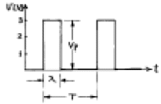
- 0.75
- 1.5
- 2
- 3
(정답률: 알수없음)
13. 그림과 같은 ECL 회로의 논리출력은? (단, Y, Y'는 출력단자)
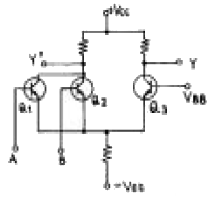
- Y : NAND, Y': AND
- Y : AND, Y': NAND
- Y : NOR, Y': OR
- Y : OR, Y': NOR
(정답률: 알수없음)
14. 다음 그림과 같은 회로명은?
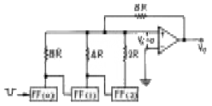
- 슈미트 트리거 회로
- 멀티 바이브레이터 회로
- 계단파 발생회로
- 펄스 카운터 회로
(정답률: 알수없음)
15. 다음 중 불연속 레벨 변조에 해당되는 것은?
- PCM
- AM
- PM
- FM
(정답률: 50%)
16. 어떤 출력증폭회로의 입력과 출력파형이다. 이 증폭회로의 설명으로 맞는 것은?
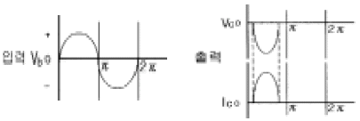
- C급증폭으로 고주파 대출력에 적합하다.
- B급증폭으로 중대역 대출력에 적합하다.
- A급증폭으로 소신호 전압증폭에 적합하다.
- AB급증폭으로 저주파 전류증폭에 적합하다.
(정답률: 알수없음)
17. 다음 발진회로에 대한 설명 중 틀린 것은?
- CR 발진기는 비교적 낮은 주파수에 적합하다.
- 수정진동자의 Q는 매우 크다.
- 부궤환시키면 발진 주파수가 증가한다.
- 수정발진기는 유도성 리액턴스에서 동작시킨다.
(정답률: 알수없음)
18. 저항이 2㏁ 이고 콘덴서가 1㎌ 인 다음 회로에서 출력전압 Vo에 대한 식으로 맞는 것은?
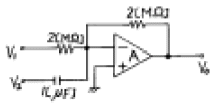
- Vo=-(V1+2V2dt)
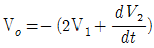
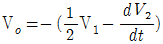
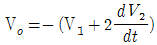
(정답률: 알수없음)
19. 논리 IC의 종류 중에서 표준특성으로 비교할 때 팬 아우트(fan out)의 수가 가장 많은 것은?
- 표준형 TTL
- 쇼트키 TTL
- ECL
- CMOS
(정답률: 알수없음)
20. 멀티 바이브레이터의 단안정, 무안정, 쌍안정의 동작은 무엇에 의해 결정되는가?
- 결합회로의 구성
- 전원전압의 크기
- 바이어스전압 크기
- 전원전류의 크기
(정답률: 알수없음)
2과목: 정보통신 시스템
21. 동기식 디지털 계위에서 STM-1의 비트율은?
- 51.840[Mb/s]
- 155.520[Mb/s]
- 546.992[Mb/s]
- 622.080[Mb/s]
(정답률: 알수없음)
22. 다음에 열거한 네트워크 연동장치 중 그림과 같은 구조를 갖는 것은?
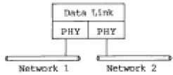
- Router
- Repeater
- Gateway
- Bridge
(정답률: 알수없음)
23. LAN 에서 거의 사용되지 않는 네트워크 유형은?
- 성형(star)
- 링형(ring)
- 버스형(bus)
- 망형(mesh)
(정답률: 알수없음)
24. ITU-T에서 권고한 TMN관리 계층 중 성능관리, 고장관리, 구성관리, 과금관리 및 안전관리의 기능으로 구성된 계층은?
- 사업관리 계층(BML)
- 서비스관리 계층(SML)
- 망관리 계층(NML)
- 요소관리 계층(EML)
(정답률: 알수없음)
25. 데이터그램 패킷교환방식에 관한 설명 중 옳지 않는 것은?
- 데이터전송 전에 호출설정 단계가 필요하다.
- 전송 중 노드(Node)의 장애시 다른 노드의 경로 설정이 가능하다.
- 각 패킷마다 경로가 설정된다.
- 각 패킷마다 오버헤드 비트가 필요하다.
(정답률: 알수없음)
26. ISDN 베어러 서비스에 대한 설명 중 틀린 것은?
- 베어러 서비스는 주로 하위 계층기능만을 갖는다.
- 정보전송 속성, 엑세스 속성, 일반 속성으로 구성되어 있다.
- 정보전송 속도는 최대 384[kbps]까지 지원 가능하다.
- 정보전달 형태로는 회선방식과 패킷방식이 있다.
(정답률: 알수없음)
27. 패킷 교환(Packet Switching)의 특징으로 틀린 것은?
- 동적인 대역폭 사용이 가능하다.
- 속도 및 코드의 변환이 가능하다.
- 각 연결은 독점적인 대역의 전용경로를 사용한다.
- 버스트성 트래픽에 대해서 대역 활용 효율이 좋다.
(정답률: 알수없음)
28. 일반전화 가입자와 ISDN 가입자를 동시에 수용할 수 있는 전전자 교환기에 대한 설명으로 적절하지 않은 것은?
- 일반 전화를 접속하는 가입자선 정합장치와 ISDN 가입자를 접속하는 정합장치를 갖추고 있다.
- ISDN 가입자 정합장치는 음성신호와 패킷 데이터를 분리하는 기능을 갖추고 있다.
- ISDN 가입자에 대한 패킷 서비스를 제공하기 위하여 패킷망과의 연동서비스를 갖추고 있다.
- ISDN 용으로는 공통선 신호방식이 전화망용으로는 개별선 신호방식이 사용된다.
(정답률: 알수없음)
29. 50개의 국간을 망형으로 연결하기 위한 필요 회선수는?
- 50
- 49
- 1025
- 1225
(정답률: 알수없음)
30. 둘 이상의 노드내의 여러개 프로세스간에 통신기능을 실현하기 위해 여러가지 제어정보의 송수신에 관한 절차나 규범을 규정한 것을 무엇이라 하는가?
- 프로토콜
- 프로시듀어
- 제어함수
- 인터페이스
(정답률: 알수없음)
31. 장거리 회선에서 감쇠왜곡을 감소 시키려면?
- 위상 정수가 주파수에 반비례하여야 한다.
- 특성 임피이던스가 주파수에 비례하여야 한다.
- 특성 임피이던스와 위상 정수가 비례하여야 한다.
- 감쇠 정수가 주파수에 관계없이 일정하여야 한다.
(정답률: 알수없음)
32. 통신선로를 이용하는데 있어서 다중화하는 이유로 가장 적합한 것은?
- 통신선로에서 발생하는 에러를 줄이기 위하여
- 음성회선을 이용한 전송에서의 왜곡을 막기 위하여
- 경제적이고 효율적인 네트워크를 실현하기 위하여
- 데이터전송시 잡음의 영향을 없애기 위하여
(정답률: 알수없음)
33. PCM에서 양자화 잡음을 경감시키는 방법이 아닌 것은?
- 양자화 단계의 세분화
- 압축과 신장
- 부호 비트수의 증가
- 부호 비트수의 감소
(정답률: 알수없음)
34. 국내 및 국제 전화신호용으로 사용되며 래지스터 신호로 두개 그룹의 대역내 주파수(전진 6주파수, 후진 6주파수)를 사용하는 ITU-T 신호방식은?
- R1
- R2
- R/D
- No.4
(정답률: 알수없음)
35. 다음 중 심볼간 간섭정도를 나타내는 것은?
- 아이패턴(eye pattern)
- 변조도
- 신호대 잡음비(SNR)
- 교차편차식별도(XPD)
(정답률: 알수없음)
36. 디지털 전용회선의 양쪽 종단 부분에서 모뎀을 대신하여 DTE와 직접 접속되어 사용되는 장치는?
- DSU
- CSU
- OCU
- STE
(정답률: 알수없음)
37. 광전송시스템을 구성할 때 고려할 사항이 아닌 것은?
- 전송매체
- 전자파의 간섭
- 전송방식
- 다중화방식
(정답률: 알수없음)
38. 가상단말(Virtual Terminal)의 설명 중 틀린 내용은?
- 실제단말의 기능을 추상화, 일반화하여 정의한 표준 기능을 갖는 단말이다.
- 이기종간 통신을 대상으로 하는 OSI에 적용된다.
- 가상단말 기능은 일종의 프로토콜 서비스이다.
- 세션계층 프로토콜에 채용되고 있다.
(정답률: 알수없음)
39. 다음 중 LAN의 선로 부호로 많이 사용되는 맨체스터 코드(Manchester code)의 가장 큰 장점은?
- 채널 효율이 높다.
- 신호의 스펙트럼 특성이 양호하다.
- 신호 레벨의 종류가 적다.
- 동기를 위한 타이밍 정보가 충분하다.
(정답률: 알수없음)
40. PCM 통신방식에서 전화 음성을 8[KHz]로 샘플링해서 8[bit]로 코드화했을 경우 그 비트수(bits)는 몇[Kbits]인가?
- 128
- 64
- 32
- 16
(정답률: 55%)
3과목: 정보통신 기기
41. 데이타 단말장치의 구성에서 전송회선을 통해 들어온 데이타를 직렬, 병렬신호로 변환하는 것은?
- 회선접속부
- 회선제어부
- 입출력제어부
- 입출력장치부
(정답률: 알수없음)
42. CATV의 중계전송방식 중 광화이버 케이블 전송 방식으로 실용화되기 어려운 것은?
- 아날로그 전송방식
- 디지털 전송방식
- 위상분할다중방식
- 파장분할다중방식
(정답률: 알수없음)
43. 다음 화상응답시스템의 특징에 관한 설명 중 옳지 않은 것은?
- 센터와 단말사이에 광대역 전송로를 사용한다.
- 정지화상을 대상으로 한 화상서비스이나 문자나 동화상이 되지 않아 생동감이 없다.
- 방송정보와 같이 일방향성이 아닌 컴퓨터가 개별요구에 따라 원하는 정보를 제공한다.
- 화면의 전송의 느림, 빠름 또는 화면정지 등의 다양한 화면상태의 표현이 가능하다.
(정답률: 64%)
44. RS-232C/V.24 표준인터페이스에서 수신(RD)을 담당하는 핀은 몇 번인가?
- 1번
- 2번
- 3번
- 4번
(정답률: 알수없음)
45. 그림이나 사진을 직접 컴퓨터에 입력하는 기기는?
- 스캐너
- 마우스
- 디지타이저
- 플로터
(정답률: 55%)
46. 마이크로파 통신방식에서 변환된 중간주파수를 증폭후 다시 마이크로파로 변환하여 송신하는 중계방식은?
- 직접 중계방식
- 검파 중계방식
- 베이스밴드 중계방식
- 헤테로다인 중계방식
(정답률: 알수없음)
47. 단말기의 디지털데이터를 디지털신호로 전송하는 장치는?
- CODEC
- 변·복조기
- DSU
- phone
(정답률: 알수없음)
48. 정보 단말기기의 전송제어 장치의 구성요소가 아닌 것은?
- 회선접속부
- 회선제어부
- 입출력제어부
- 전용회선부
(정답률: 알수없음)
49. CDMA의 특징이 아닌 것은?
- 상향 회선의 전력 조절이 불필요하다.
- 간섭신호의 배제 능력이 우수하다.
- 통화의 비화성이 좋다.
- 다중 전파로에 의한 페이딩의 영향을 적게 받는다.
(정답률: 알수없음)
50. 프리엠파시스 회로에 대한 설명으로 가장 타당한 것은?
- FM송신기에서 변조신호의 높은 주파수를 강조하는 것이다.
- FM에서 복조한 후 음성 등의 높은 주파수를 강조하는 것이다.
- FM송신기에서 최대 주파수 편이가 규정치를 넘지 않도록 하는 회로다.
- FM에서 주파수 편이를 항상 일정하게 유지시켜 주는 회로이다.
(정답률: 알수없음)
51. 컴퓨터 포트의 사용을 원하는 단말기들을 바쁘지 않은 포트에만 연결시켜 주는 기능을 갖는 장치는?
- 포트 공동 이용장치
- 포트 선택장치
- 선로 공동 이용장치
- 모뎀 공동 이용장치
(정답률: 알수없음)
52. 비디오텍스의 기술방식 중 점, 선, 호, 원, 다각형 등과 같은 기본적인 도형 코드를 전송하여 화면을 구성하는 방식은?
- 알파모자이크
- 알파포토그래픽
- 알파뉴메릭
- 알파지오메트릭
(정답률: 알수없음)
53. 다음 중 앞으로의 정보통신 시스템 구축과 관계가 없는 것은?
- 음성, 문자, 화상 데이타의 동시전송
- 디지털 통신방식에서 아날로그 방식으로서의 전환
- 고속 전송네트워크의 사용
- 부품소자의 고밀도 집적화
(정답률: 알수없음)
54. 고속모뎀에서 통신회선의 상태가 좋지 않아 고속의 전송이 불가능할 때 전송속도를 스스로 감소 시키는 것은?
- Polling
- Fall back
- Calling
- Scanning
(정답률: 67%)
55. 포트선택기의 특징과 관계 적은 것은?
- 폴링 네트워크에서 사용된다.
- 포트선택기는 컴퓨터포트의 사용을 원하는 단말기에 포트를 연결하여 준다.
- 우선순위에 의해 그룹별을 구분하여 포트를 선택하게 할 수도 있다.
- 자기진단기능이 있다.
(정답률: 알수없음)
56. 비디오텍스와 비교한 텔레 텍스트(teletext)의 특징이 아닌 것은?
- 한정된 지역에서 사용된다.
- 화면 전송속도가 빠르다.
- 디코더와 TV 수신기와의 조합성이 양호하다.
- 단방향 방송 방식의 화상정보 시스템이다.
(정답률: 알수없음)
57. 다음 컴퓨터 입력장치의 종류 중에 X, Y 위치를 입력할 수 있는 장치는 무엇인가?
- MICR
- Digitizer
- OCR
- Scaner
(정답률: 알수없음)
58. 멀리 떨어져 있는 지역상호간의 회의실을 영상과 음성통신회선으로 접속하여 회의를 진행하는 것을 무엇이라 하는가?
- 영상(화상)통신회의
- CATV
- CCTV
- VRS
(정답률: 알수없음)
59. 고속 광대역 통신에 적합한 ATM 교환기의 비동기식전달모드(ATM)에 대한 설명 중 맞는 것은?
- 물리적인 회선연결로 전송속도가 일정하다.
- 정보의 지연이 일정하다.
- 정보전달 시 손실이 없다.
- 정보의 형태는 VBR(Variable Bit Rate)에 적합하다.
(정답률: 알수없음)
60. 다음 중 AM 통신기기와 비교하여 FM 통신기기에만 사용되는 것은?
- 고역통과필터(HPF)
- 대역통과필터(BPF)
- 진폭 제한기(Limiter)
- 포락선 검파기
(정답률: 알수없음)
4과목: 정보전송 공학
61. N위상 위상변조를 하는 동기식 모뎀의 신호속도가 M baud/초 인 경우 비트속도를 구하는 식은?
- N log10 M
- M log10 N
- N log2 M
- M log2 N
(정답률: 알수없음)
62. 해밍코드에서 해밍비트를 구하는 식은? ( 단, n : 블럭 전체의 비트수 k : 데이타 비트수 m : 해밍 비트수 n = m + k )(오류 신고가 접수된 문제입니다. 반드시 정답과 해설을 확인하시기 바랍니다.)
- 2m≥ n+1
- 2m≤ n+1
- 2m≥ n+2
- 2m≤ n+2
(정답률: 알수없음)
63. 데이타 통신 시스템의 부호전송방식 설명 중 병렬전송방식과 비교하여 직렬전송방식의 특징으로 가장 옳은 것은?
- 직병렬 변환회로가 필요하다.
- 단거리 데이타 전송에 적합하다.
- 동일시간내에 많은 정보를 보낼수 있다.
- 비트수에 대응한 전송로 및 변복조 회로가 필요하다.
(정답률: 40%)
64. OSI 7계층 중 응용 프로세스 간에 교환될 데이터의 형식과 사용자 데이터 전송을 위해 상호 이해되는 형식을 제공하는 계층은?
- 응용 계층
- 세션 계층
- 표현 계층
- 전송계층
(정답률: 알수없음)
65. 기저대역 신호 중 신호대역폭이 가장 좁은 것은?
- NRZ
- Miller Code(Delay Modulation)
- Manchester(Biphase)
- RZ
(정답률: 알수없음)
66. QAM에 대한 설명 중 옳지 않은 것은?
- 대역폭 효율은 2bps/Hz이다.
- QAM신호는 두개의 직교성 DSB-SC신호를 선형적으로 합성한 것이다.
- 동기검파를 사용하여 신호를 검출 할 수 있다.
- 동일한 신호레벨에서 PSK와 오류확률은 같다.
(정답률: 알수없음)
67. BASIC 전송제어 절차에서 제어 문자의 설명이 틀린 것은?
- SYN : 문자동기유지
- STX : 헤딩의 시작표시
- ACK : 수신된 정보메세지에 대한 긍정응답
- ENQ : 상대국 데이터 링크 설정요구
(정답률: 50%)
68. 광 중계기의 주요 구성품이 아닌 것은?
- 광전 변환기
- 전기신호 중계기
- 전광 변환기
- 광화이버
(정답률: 알수없음)
69. HDLC 전송제어에서 사용하는 동작 모드가 아닌 것은?
- 정규응답모드(NRM)
- 초기 모드(IM)
- 비동기 평형모드(ABM)
- 비동기 응답모드(ARM)
(정답률: 50%)
70. 심볼"0"과 "1"에 대하여 각각 레벨 0과 1인 정극성 펄스 또는 레벨 -1의 부극성 펄스를 할당하며, 직류차단의 영향을 없앨 수 있는 전송부호 형식은?
- 양극 NRZ부호
- 단극부호
- 양극 RZ부호
- 바이폴라부호
(정답률: 알수없음)
71. 다음 중 ADSL에 대한 설명이 올바른 것은?
- 4선식 선로를 이용하여 고속의 데이터 서비스와 동시에 기존의 음성 서비스를 제공하는 기술이다.
- 동일한 고속의 상·하향속도로 VOD 서비스 등의 멀티 미디어 전송이 가능하다.
- 상·하향 광케이블 선로가 분리되어 있어 전이중 송수신방식을 수행한다.
- ADSL을 위해 사용되는 대표적인 변조 기법은 DMT 및 CAP 방식이다.
(정답률: 알수없음)
72. 재생중계기의 기능 3R에 해당되지 않는 것은?
- Reshaping
- Regeneration
- Reduction
- Retiming
(정답률: 70%)
73. 표피효과(skin effect)의 설명으로 옳은 것은?
- 주파수가 점점 높아짐에 따라 전류는 도선의 바깥쪽으로 흐르려고 하는 현상
- 간접적으로 돌아 들어오는 누화를 방지한다.
- 수단이 개방된 선로에서 수단 전압이 송단 전압보다 커지는 현상
- 와류에 의한 전자 에너지의 열손실
(정답률: 알수없음)
74. 전송속도(bit rate)에 대한 표현으로 맞는 것은?
- 전송속도 = {(부호화 비트 수 * 채널 수) + 동기부호 수} * 표본화 주파수
- 전송속도 = {(표본화 비트 수 * 채널 수) + 동기부호 수} * 표본화 주파수
- 전송속도 = {(부호화 비트 수 * 채널 수) + 동기부호 수} * 부호화 주파수
- 전송속도 = {(부호화 비트 수 * 프레임 수) + 동기부호 수} * 표본화 주파수
(정답률: 알수없음)
75. PCM 통신방식에서 부호화의 방법은?
- 표본화된 펄스에서 일정한 주기로 나타나는 진폭의 폭을 바꾸어 준다.
- 주기적으로 PAM변조하여 나타난 파형으로 표시한다.
- 표본화된 펄스(PAM 펄스)를 진폭의 크기에 따라 수개의 단위 펄스의 유,무조합(1,0의 조합)으로 만든다.
- 양자화된 파형의 위치 및 폭을 일정한 크기의 진폭을 갖는 연속,불연속 신호로 표시한다.
(정답률: 알수없음)
76. 아래 서술한 내용에 가장 알맞은 위성 통신 방식은?
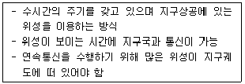
- 정지궤도 위성 방식
- 랜덤위성 방식
- 위상위성 방식
- 분산 제어 채널 방식
(정답률: 30%)
77. Crosstalk에 대한 설명으로 맞지 않는 것은?
- 서로 다른 전송로상의 신호가 전기적 결합에 의해 다른회선에 영향을 주는 현상이다.
- 크게 근단 누화와 원단 누화로 나뉠수 있다.
- 전 주파수 대역에 걸쳐 발생하므로 백색 잡음에 가장 근사한 잡음이라 할수 있다.
- 통신 품질을 저하시키는 직접적인 원인이 된다.
(정답률: 40%)
78. 두개의 코드 C1과 C2가 다음과 같을 때, 두 코드 사이의 Hamming distance(해밍거리)는 얼마인가?
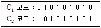
- 0
- 3
- 6
- 9
(정답률: 알수없음)
79. 다중화 방식 중 실제로 보낼 데이터가 있는 단말 장치에만 동적으로 각 채널에 타임 슬롯을 할당하는 방식을 무엇이라고 하는가?
- 주파수 분할 다중화 방식 (Frequency Division Multiplexing)
- 동기식 시분할 다중화 방식 (Synchronous Time Division Multiplexing)
- 비동기식 시분할 다중화 방식 (Asynchronous Time Division Multiplexing)
- 광파장 분할 다중화 방식 (Wavelength Division Multiplexing)
(정답률: 알수없음)
80. 다음 그림과 같은 파형으로 도시되는 디지털 신호의 종류는?
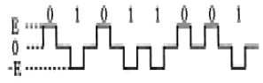
- 단류 NRZ
- 복류 NRZ
- 단류 RZ
- 복류 RZ
(정답률: 알수없음)
5과목: 전자계산기일반 및 정보통신설비기준
81. 다음 중 문자의 표시와 관계 없은 코드는?
- BCD 코드
- EBCDIC 코드
- 그레이(Gray) 코드
- ASCII 코드
(정답률: 70%)
82. 다음 중 주기억장치의 성능을 평가하는 단위가 아닌 것은?
- 기억소자
- 기억용량
- 사이클타임
- 액세스폭
(정답률: 알수없음)
83. 데이터를 모아 두었다가 어느 시기에 일괄해서 처리하는 방식은?
- 멀티프로그래밍(multi programming)
- 타임세어링방식(time sharing system)
- 배치처리(batch processing)
- 텔레프로세싱시스템(tele-processing system)
(정답률: 알수없음)
84. 인터럽트 발생시 프로그램의 복귀 번지를 저장하는 것은?
- Stack
- Queue
- Deque
- PC
(정답률: 알수없음)
85. 다음 중 가장 큰 수는?
- (11101111)2
- (367)8
- (235)10
- (FB)16
(정답률: 42%)
86. 프로그램을 작성하는 과정에서 정보의 흐름, 처리과정 등을 이해하기 쉽게 논리적으로 표현하는 좋은 방법은 어느 것인가?
- control chart
- spacing chart
- diagram chart
- flow chart
(정답률: 알수없음)
87. 다음 중 "0"에 대응되는 비트만 클리어 시킬 수 있는 동작은?
- 시프트 명령
- 배타적 OR 명령
- AND 명령
- OR 명령
(정답률: 34%)
88. 제어장치를 구성하는 요소가 아닌 것은?
- 제어 신호 발생기
- 명령 레지스터
- 명령 계수기
- 누산기
(정답률: 알수없음)
89. 다음 중 시스템의 안정성을 고려하여 한쪽의 CPU가 가동중일 때, CPU가 고장이 나면 즉시 대기중인 CPU가 작동되도록 운영하는 방식은?
- 다중 처리 시스템
- 듀얼 시스템(Dual System)
- 분산처리 시스템
- 온라인 시스템(On-line System)
(정답률: 60%)
90. 기계어를 기호(symbolic code)로 1 대 1 대응시켜 만든 언어는?
- 어셈블리어
- 고급언어
- 컴파일러
- 언어 프로세서
(정답률: 알수없음)
91. 전기통신설비의 기술기준에서 음성주파수의 대역 범위는?
- 500 ~ 2500[Hz]
- 300 ~ 3400[Hz]
- 400 ~ 3500[Hz]
- 500 ~ 4000[Hz]
(정답률: 알수없음)
92. 정보통신공사업자 이외의 일반인이 시공할 수 있는 경미한 공사는 ?
- 고주파 이용 통신설비의 설비공사
- 교환설비 설치공사
- 전력유도방지의 설비공사
- 단말기 증설공사로써 정보통신부장관이 고시하는 공사
(정답률: 알수없음)
93. 국가기관·지방자치단체 등의 정보화촉진 등을 지원하고 정보화관련 정책개발을 지원하기 위하여 설립한 기관은?
- 정보통신정책연구원
- 한국정보통신기술협회
- 한국정보통신연합회
- 한국전산원
(정답률: 알수없음)
94. 다음 중 정부는 정보화를 촉진함에 있어 이용자의 권익보호를 위한 시책이 아닌 것은?
- 전기통신사업자의 불온통신 단속
- 건전한 이용을 위한 홍보, 교육 및 연구
- 이용자의 건전한 조직활동의 지원 및 육성
- 이용자의 생명, 재산 및 신체상의 위해방지
(정답률: 34%)
95. 정보통신부장관은 전기통신설비의 효율적 관리·운영을 위하여 필요한 경우 다른 법률에 의해 설치된 전기통신설비를 통합운영하게 할 수 있다. 이 경우 누구에게 통합운영하게 할 수 있는가?
- 정부부처
- 기간통신사업자
- 지방자치단체
- 모든 통신사업자
(정답률: 알수없음)
96. 정보통신부장관이 통신기자재생산업자에게 기술지도를 하는 내용이 아닌 것은?
- 기술의 표준화
- 기술의 유지보수
- 기술정보의 제공
- 국제기구와의 협력
(정답률: 알수없음)
97. 정보통신공사의 감리원의 업무 범위가 아닌 것은?
- 하도급에 대한 타당성 검토
- 공사계획 및 공정표의 작성
- 공사업자가 작성한 시공 상세도면의 검토·확인
- 사용 자재의 규격 및 적합성에 관한 검토·확인
(정답률: 알수없음)
98. 기간통신사업자로부터 전기통신회선설비를 임차하여 전기 통신 역무를 제공하는 전기통신사업은?
- 기간통신사업
- 자가통신사업
- 부가통신사업
- 대여통신사업
(정답률: 0%)
99. 정보화촉진기본법에 의한 정보통신의 용어 정의에서 ( )안에 해당되는 것은?
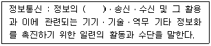
- 저장 · 처리 · 유통 · 검색
- 수집 · 가공 · 저장 · 검색
- 수집 · 가공 · 처리 · 저장
- 가공 · 저장 · 처리 · 검색
(정답률: 알수없음)
100. 정보통신공사업법의 목적으로 가장 잘 부합되는 것은?
- 정보통신공사의 적정한 시공과 공사업의 건전한 발전을 도모
- 정보통신공사의 도급 등록
- 정보통신공사의 발주에 관한 감사 사항 규제
- 정보통신공사업의 등록에 관한 필요 사항 규제
(정답률: 알수없음)